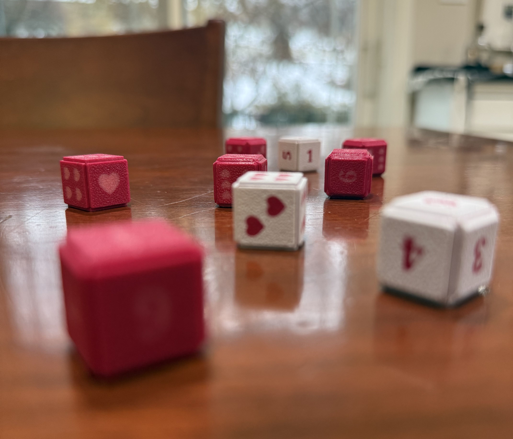

Dice Core
Dice Core is a dice system that allows the creation of custom dice sets for your games. For years I have wanted to be able to 3D print dice for my dungeons and dragons games, but there never was a trustworthy or dependable set of 3D printable dice.
Dice Core now fills that space and enables anyone to 3D print and customized thier dice. Whether is is for TTRPGs or event just your favorite board games, you will be able to custom your dice and print them on demand.
As of right now the only avaliable dice core is the 6-sided dice, but in the future there will be more dice shapes.
How It Works
In order to to 3D print your own dice, follow the following steps.
Step One: Print Your Dice Core
To start making your dice, you must first download and print the dice cores. You can find the dice cores by following the link belows:
Notes: Print the dice at 80% concentric infill with seam placement set to random for best results
Step Two: Print Your Dice Faces
After you print your dice core, figure out what dice faces you want. You can find your dice faces wherever you get your 3D prints. Click below to access them.
Notes: Print the dice at highest possible detail with seam placement set to random for best results.
Step Three: Snap The Faces
Finally, just snap the faces to the dice core in whichever way you want!
What's Coming
In the future I would love to introduce a patreon to continously release new dice sets and different dice shapes.
If you would like to show support to make this possible, fill out this survey to stay up to date and show your support.